Why disease variants sit in regulatory DNA, and how chromatin data help find the causal variant, cell type and gene
Genome-wide association studies (GWAS) have found tens of thousands of loci for diseases and traits. Almost all of them are non-coding. This lecture shows how chromatin maps turn such a locus into a testable hypothesis.
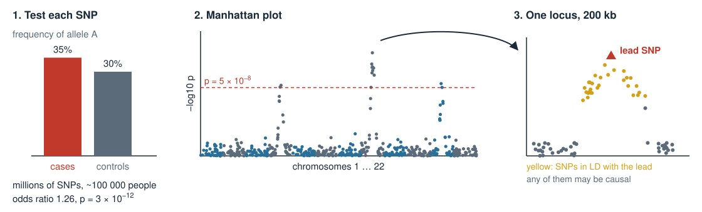
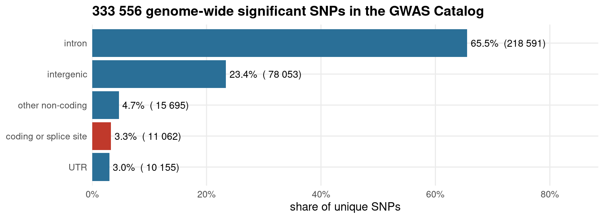
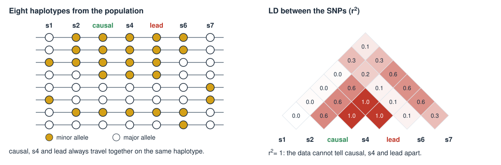
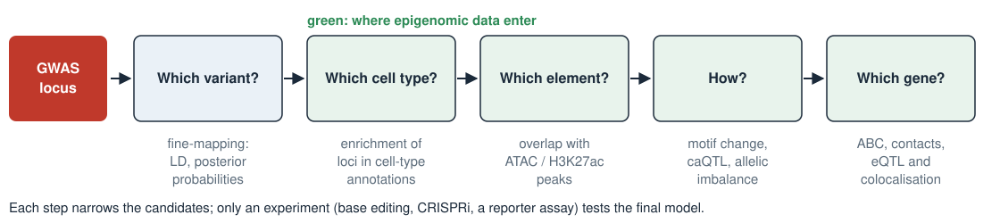
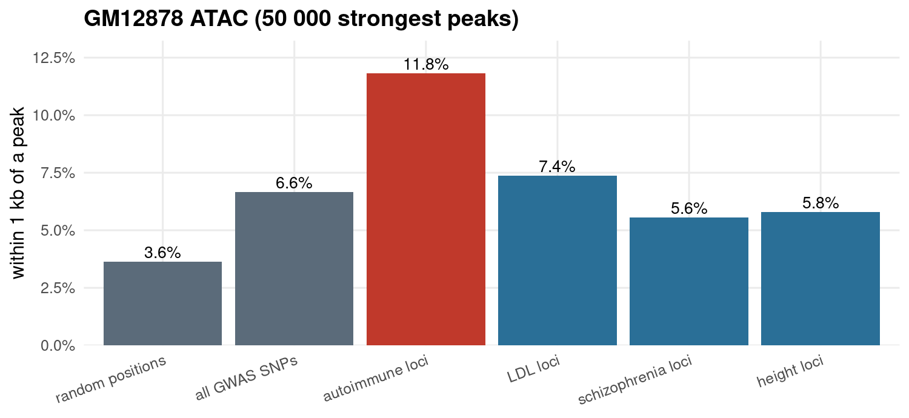
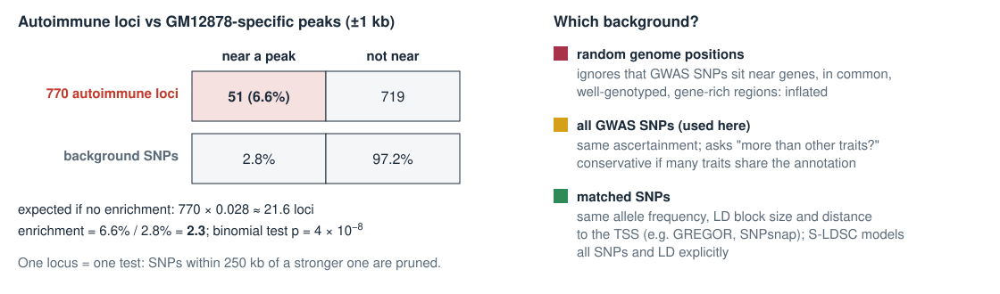
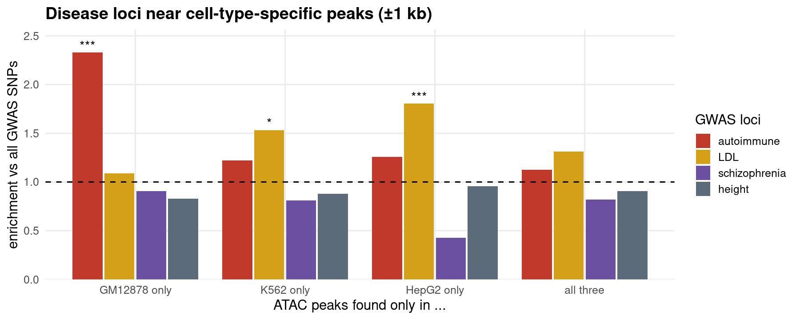
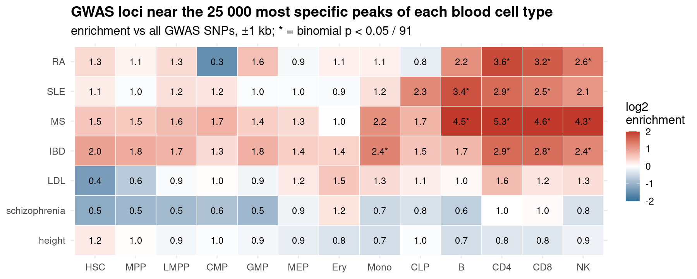
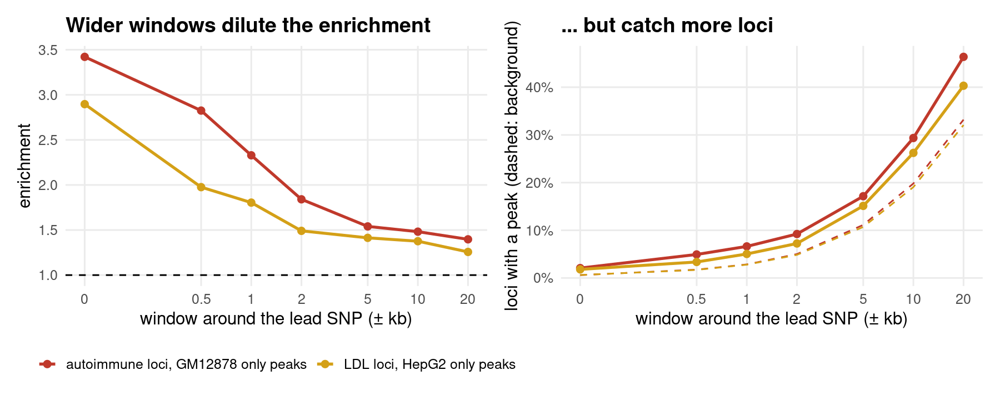
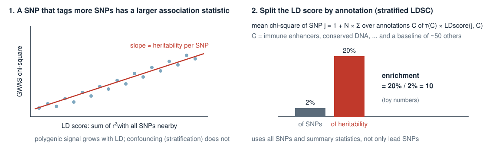
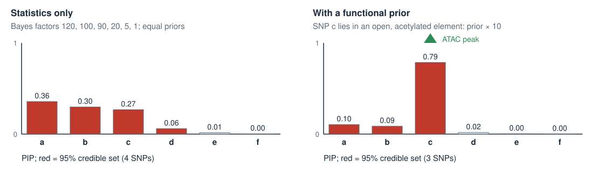
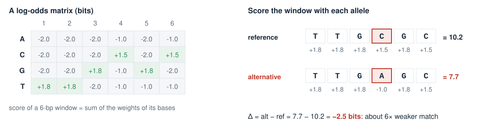
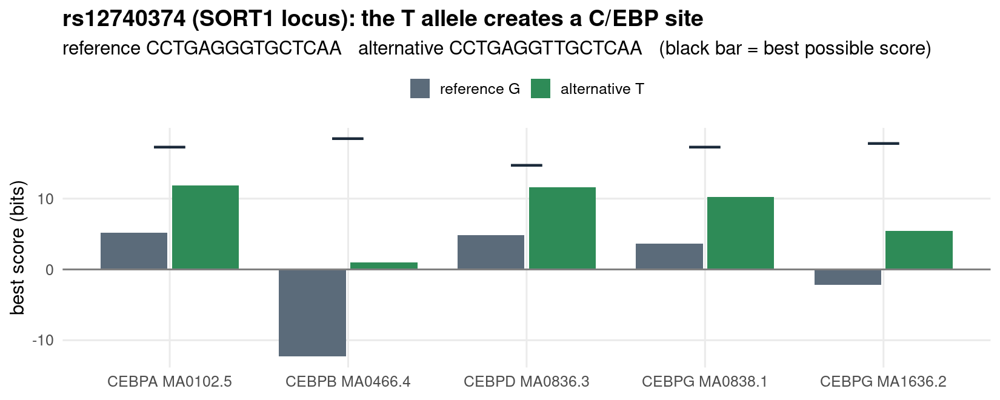
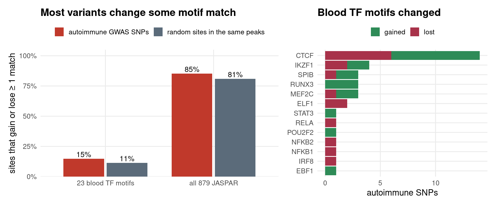
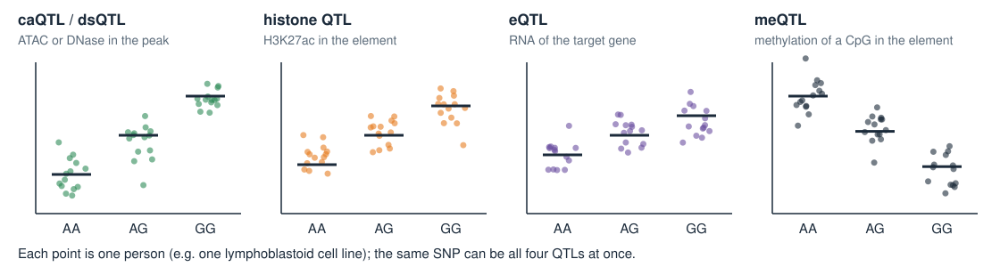
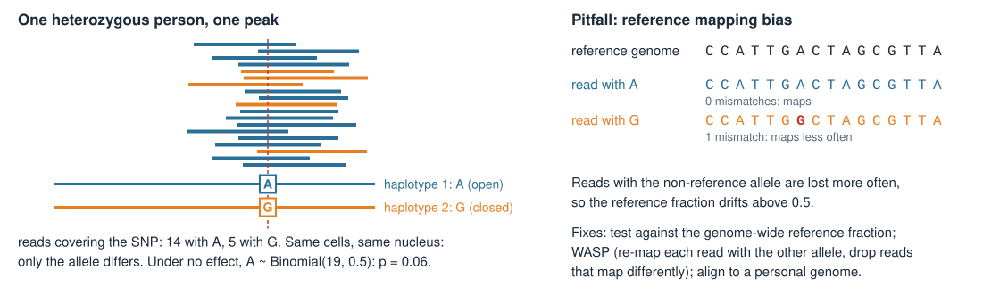
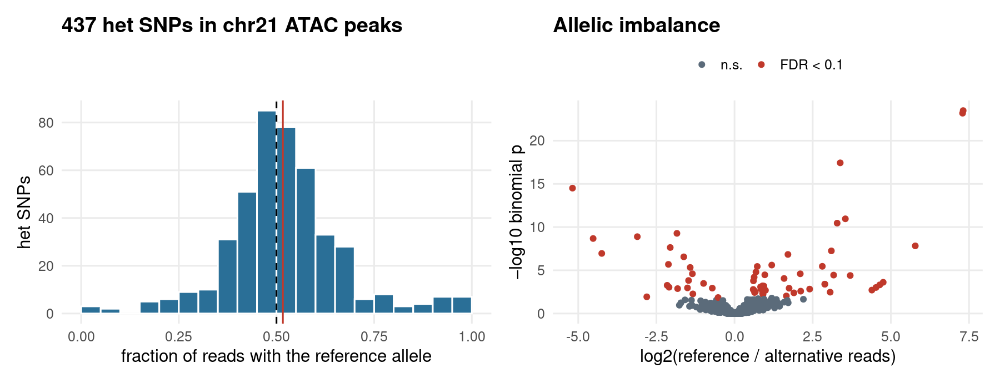
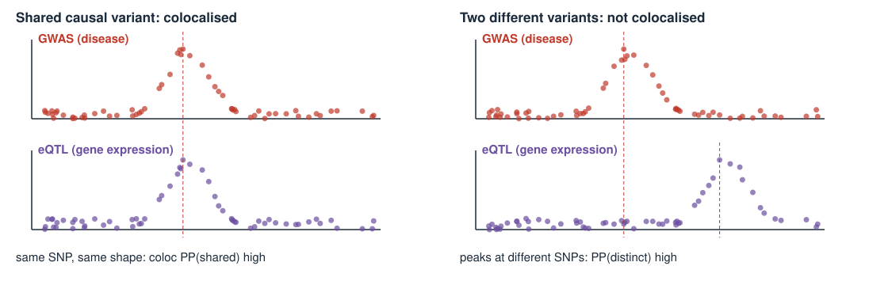
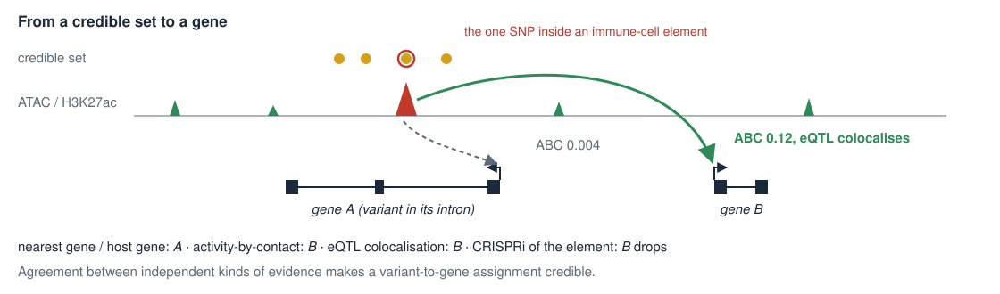
near <- function(chr, pos, peaks, w = 1000) # SNP within w bp of a peak?
overlapsAny(GRanges(chr, IRanges(pmax(pos - w, 1), pos + w)), peaks)
loci <- leads[set == "autoimmune"] # one lead SNP per locus
k <- sum(near(loci$chr, loci$pos, gm_only)) # 51 of 770
p0 <- mean(near(bg$chr, bg$pos, gm_only)) # 0.028 for all GWAS SNPs
c(enrichment = k / nrow(loci) / p0,
p = binom.test(k, nrow(loci), p0, alternative = "greater")$p.value)overlapsAny per question.| idea | key fact |
|---|---|
| GWAS hits | ~3% coding or splice; most act through gene regulation |
| LD | the lead SNP tags a block of correlated variants; it is often not causal |
| enrichment | 2×2 against other GWAS SNPs (matched), not random positions |
| this data | autoimmune loci 2.3× in B-cell-specific peaks; LDL 1.8× in liver-specific; MS 5.3× in CD4 T cells |
| windows | narrow = few loci, strong enrichment; wide = more loci, diluted |
| S-LDSC | heritability enrichment from all SNPs, conditional on a baseline |
| fine-mapping | PIP = BF / Σ BF (one causal variant); functional priors sharpen credible sets |
| motifs | Δ score of two alleles; most sites change some motif by chance |
| QTLs, allelic | caQTL across people, imbalance within one person; beware mapping bias |
| variant → gene | colocalisation + enhancer–gene links + perturbation |
Not required reading and not examined. For those who want the primary literature.